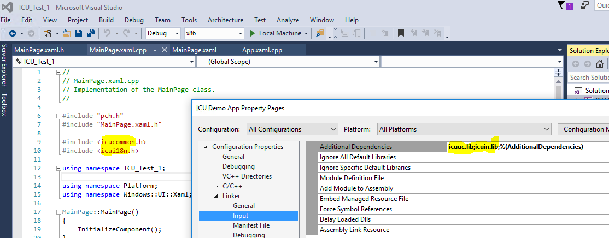

description: International Components for Unicode (ICU) is a mature, widely used set of open-source globalization APIs.
ms.assetid: 4AEBE391-4121-44B2-B15B-0032645D7053
title: International Components for Unicode (ICU)
ms.topic: article
ms.date: 05/31/2018
topic_type:
- apiref
api_location:
- icu.dll
- icuuc.dll
- icuin.dll
api_type:
- DllExport
api_name:
- utf8_nextCharSafeBody
- utf8_appendCharSafeBody
- utf8_prevCharSafeBody
- utf8_back1SafeBody
- u_versionFromString
- u_versionFromUString
- u_versionToString
- u_getVersion
- u_errorName
- utrace_setLevel
- utrace_getLevel
- utrace_setFunctions
- utrace_getFunctions
- utrace_vformat
- utrace_format
- utrace_functionName
- u_shapeArabic
- uscript_getCode
- uscript_getName
- uscript_getShortName
- uscript_getScript
- uscript_hasScript
- uscript_getScriptExtensions
- uscript_getSampleString
- uscript_getUsage
- uscript_isRightToLeft
- uscript_breaksBetweenLetters
- uscript_isCased
- ulistfmt_open
- ulistfmt_close
- ulistfmt_format
- uiter_current32
- uiter_next32
- uiter_previous32
- uiter_getState
- uiter_setState
- uiter_setString
- uiter_setUTF16BE
- uiter_setUTF8
- uenum_close
- uenum_count
- uenum_unext
- uenum_next
- uenum_reset
- uenum_openUCharStringsEnumeration
- uenum_openCharStringsEnumeration
- uloc_getDefault
- uloc_setDefault
- uloc_getLanguage
- uloc_getScript
- uloc_getCountry
- uloc_getVariant
- uloc_getName
- uloc_canonicalize
- uloc_getISO3Language
- uloc_getISO3Country
- uloc_getLCID
- uloc_getDisplayLanguage
- uloc_getDisplayScript
- uloc_getDisplayCountry
- uloc_getDisplayVariant
- uloc_getDisplayKeyword
- uloc_getDisplayKeywordValue
- uloc_getDisplayName
- uloc_getAvailable
- uloc_countAvailable
- uloc_getISOLanguages
- uloc_getISOCountries
- uloc_getParent
- uloc_getBaseName
- uloc_openKeywords
- uloc_getKeywordValue
- uloc_setKeywordValue
- uloc_isRightToLeft
- uloc_getCharacterOrientation
- uloc_getLineOrientation
- uloc_acceptLanguageFromHTTP
- uloc_acceptLanguage
- uloc_getLocaleForLCID
- uloc_addLikelySubtags
- uloc_minimizeSubtags
- uloc_forLanguageTag
- uloc_toLanguageTag
- uloc_toUnicodeLocaleKey
- uloc_toUnicodeLocaleType
- uloc_toLegacyKey
- uloc_toLegacyType
- ures_open
- ures_openDirect
- ures_openU
- ures_close
- ures_getVersion
- ures_getLocaleByType
- ures_getString
- ures_getUTF8String
- ures_getBinary
- ures_getIntVector
- ures_getUInt
- ures_getInt
- ures_getSize
- ures_getType
- ures_getKey
- ures_resetIterator
- ures_hasNext
- ures_getNextResource
- ures_getNextString
- ures_getByIndex
- ures_getStringByIndex
- ures_getUTF8StringByIndex
- ures_getByKey
- ures_getStringByKey
- ures_getUTF8StringByKey
- ures_openAvailableLocales
- uldn_open
- uldn_close
- uldn_getLocale
- uldn_getDialectHandling
- uldn_localeDisplayName
- uldn_languageDisplayName
- uldn_scriptDisplayName
- uldn_scriptCodeDisplayName
- uldn_regionDisplayName
- uldn_variantDisplayName
- uldn_keyDisplayName
- uldn_keyValueDisplayName
- uldn_openForContext
- uldn_getContext
- ucurr_forLocale
- ucurr_register
- ucurr_unregister
- ucurr_getName
- ucurr_getPluralName
- ucurr_getDefaultFractionDigits
- ucurr_getDefaultFractionDigitsForUsage
- ucurr_getRoundingIncrement
- ucurr_getRoundingIncrementForUsage
- ucurr_openISOCurrencies
- ucurr_isAvailable
- ucurr_countCurrencies
- ucurr_forLocaleAndDate
- ucurr_getKeywordValuesForLocale
- ucurr_getNumericCode
- UCNV_FROM_U_CALLBACK_STOP
- UCNV_TO_U_CALLBACK_STOP
- UCNV_FROM_U_CALLBACK_SKIP
- UCNV_FROM_U_CALLBACK_SUBSTITUTE
- UCNV_FROM_U_CALLBACK_ESCAPE
- UCNV_TO_U_CALLBACK_SKIP
- UCNV_TO_U_CALLBACK_SUBSTITUTE
- UCNV_TO_U_CALLBACK_ESCAPE
- ucnv_compareNames
- ucnv_open
- ucnv_openU
- ucnv_openCCSID
- ucnv_openPackage
- ucnv_safeClone
- ucnv_close
- ucnv_getSubstChars
- ucnv_setSubstChars
- ucnv_setSubstString
- ucnv_getInvalidChars
- ucnv_getInvalidUChars
- ucnv_reset
- ucnv_resetToUnicode
- ucnv_resetFromUnicode
- ucnv_getMaxCharSize
- ucnv_getMinCharSize
- ucnv_getDisplayName
- ucnv_getName
- ucnv_getCCSID
- ucnv_getPlatform
- ucnv_getType
- ucnv_getStarters
- ucnv_getUnicodeSet
- ucnv_getToUCallBack
- ucnv_getFromUCallBack
- ucnv_setToUCallBack
- ucnv_setFromUCallBack
- ucnv_fromUnicode
- ucnv_toUnicode
- ucnv_fromUChars
- ucnv_toUChars
- ucnv_getNextUChar
- ucnv_convertEx
- ucnv_convert
- ucnv_toAlgorithmic
- ucnv_fromAlgorithmic
- ucnv_flushCache
- ucnv_countAvailable
- ucnv_getAvailableName
- ucnv_openAllNames
- ucnv_countAliases
- ucnv_getAlias
- ucnv_getAliases
- ucnv_openStandardNames
- ucnv_countStandards
- ucnv_getStandard
- ucnv_getStandardName
- ucnv_getCanonicalName
- ucnv_getDefaultName
- ucnv_setDefaultName
- ucnv_fixFileSeparator
- ucnv_isAmbiguous
- ucnv_setFallback
- ucnv_usesFallback
- ucnv_detectUnicodeSignature
- ucnv_fromUCountPending
- ucnv_toUCountPending
- ucnv_isFixedWidth
- ucnv_cbFromUWriteBytes
- ucnv_cbFromUWriteSub
- ucnv_cbFromUWriteUChars
- ucnv_cbToUWriteUChars
- ucnv_cbToUWriteSub
- u_init
- u_cleanup
- u_setMemoryFunctions
- u_hasBinaryProperty
- u_isUAlphabetic
- u_isULowercase
- u_isUUppercase
- u_isUWhiteSpace
- u_getIntPropertyValue
- u_getIntPropertyMinValue
- u_getIntPropertyMaxValue
- u_getNumericValue
- u_islower
- u_isupper
- u_istitle
- u_isdigit
- u_isalpha
- u_isalnum
- u_isxdigit
- u_ispunct
- u_isgraph
- u_isblank
- u_isdefined
- u_isspace
- u_isJavaSpaceChar
- u_isWhitespace
- u_iscntrl
- u_isISOControl
- u_isprint
- u_isbase
- u_charDirection
- u_isMirrored
- u_charMirror
- u_getBidiPairedBracket
- u_charType
- u_enumCharTypes
- u_getCombiningClass
- u_charDigitValue
- ublock_getCode
- u_charName
- u_charFromName
- u_enumCharNames
- u_getPropertyName
- u_getPropertyEnum
- u_getPropertyValueName
- u_getPropertyValueEnum
- u_isIDStart
- u_isIDPart
- u_isIDIgnorable
- u_isJavaIDStart
- u_isJavaIDPart
- u_tolower
- u_toupper
- u_totitle
- u_foldCase
- u_digit
- u_forDigit
- u_charAge
- u_getUnicodeVersion
- u_getFC_NFKC_Closure
- utext_close
- utext_openUTF8
- utext_openUChars
- utext_clone
- utext_equals
- utext_nativeLength
- utext_isLengthExpensive
- utext_char32At
- utext_current32
- utext_next32
- utext_previous32
- utext_next32From
- utext_previous32From
- utext_getNativeIndex
- utext_setNativeIndex
- utext_moveIndex32
- utext_getPreviousNativeIndex
- utext_extract
- utext_isWritable
- utext_hasMetaData
- utext_replace
- utext_copy
- utext_freeze
- utext_setup
- uset_openEmpty
- uset_open
- uset_openPattern
- uset_openPatternOptions
- uset_close
- uset_clone
- uset_isFrozen
- uset_freeze
- uset_cloneAsThawed
- uset_set
- uset_applyPattern
- uset_applyIntPropertyValue
- uset_applyPropertyAlias
- uset_resemblesPattern
- uset_toPattern
- uset_add
- uset_addAll
- uset_addRange
- uset_addString
- uset_addAllCodePoints
- uset_remove
- uset_removeRange
- uset_removeString
- uset_removeAll
- uset_retain
- uset_retainAll
- uset_compact
- uset_complement
- uset_complementAll
- uset_clear
- uset_closeOver
- uset_removeAllStrings
- uset_isEmpty
- uset_contains
- uset_containsRange
- uset_containsString
- uset_indexOf
- uset_charAt
- uset_size
- uset_getItemCount
- uset_getItem
- uset_containsAll
- uset_containsAllCodePoints
- uset_containsNone
- uset_containsSome
- uset_span
- uset_spanBack
- uset_spanUTF8
- uset_spanBackUTF8
- uset_equals
- uset_serialize
- uset_getSerializedSet
- uset_setSerializedToOne
- uset_serializedContains
- uset_getSerializedRangeCount
- uset_getSerializedRange
- unorm2_getNFCInstance
- unorm2_getNFDInstance
- unorm2_getNFKCInstance
- unorm2_getNFKDInstance
- unorm2_getNFKCCasefoldInstance
- unorm2_getInstance
- unorm2_openFiltered
- unorm2_close
- unorm2_normalize
- unorm2_normalizeSecondAndAppend
- unorm2_append
- unorm2_getDecomposition
- unorm2_getRawDecomposition
- unorm2_composePair
- unorm2_getCombiningClass
- unorm2_isNormalized
- unorm2_quickCheck
- unorm2_spanQuickCheckYes
- unorm2_hasBoundaryBefore
- unorm2_hasBoundaryAfter
- unorm2_isInert
- unorm_compare
- ucnvsel_open
- ucnvsel_close
- ucnvsel_openFromSerialized
- ucnvsel_serialize
- ucnvsel_selectForString
- ucnvsel_selectForUTF8
- u_catopen
- u_catclose
- u_catgets
- ubidi_open
- ubidi_openSized
- ubidi_close
- ubidi_setInverse
- ubidi_isInverse
- ubidi_orderParagraphsLTR
- ubidi_isOrderParagraphsLTR
- ubidi_setReorderingMode
- ubidi_getReorderingMode
- ubidi_setReorderingOptions
- ubidi_getReorderingOptions
- ubidi_setContext
- ubidi_setPara
- ubidi_setLine
- ubidi_getDirection
- ubidi_getBaseDirection
- ubidi_getText
- ubidi_getLength
- ubidi_getParaLevel
- ubidi_countParagraphs
- ubidi_getParagraph
- ubidi_getParagraphByIndex
- ubidi_getLevelAt
- ubidi_getLevels
- ubidi_getLogicalRun
- ubidi_countRuns
- ubidi_getVisualRun
- ubidi_getVisualIndex
- ubidi_getLogicalIndex
- ubidi_getLogicalMap
- ubidi_getVisualMap
- ubidi_reorderLogical
- ubidi_reorderVisual
- ubidi_invertMap
- ubidi_getProcessedLength
- ubidi_getResultLength
- ubidi_getCustomizedClass
- ubidi_setClassCallback
- ubidi_getClassCallback
- ubidi_writeReordered
- ubidi_writeReverse
- u_charsToUChars
- u_UCharsToChars
- u_strlen
- u_countChar32
- u_strHasMoreChar32Than
- u_strcat
- u_strncat
- u_strstr
- u_strFindFirst
- u_strchr
- u_strchr32
- u_strrstr
- u_strFindLast
- u_strrchr
- u_strrchr32
- u_strpbrk
- u_strcspn
- u_strspn
- u_strtok_r
- u_strcmp
- u_strcmpCodePointOrder
- u_strCompare
- u_strCompareIter
- u_strCaseCompare
- u_strncmp
- u_strncmpCodePointOrder
- u_strcasecmp
- u_strncasecmp
- u_memcasecmp
- u_strcpy
- u_strncpy
- u_uastrcpy
- u_uastrncpy
- u_austrcpy
- u_austrncpy
- u_memcpy
- u_memmove
- u_memset
- u_memcmp
- u_memcmpCodePointOrder
- u_memchr
- u_memchr32
- u_memrchr
- u_memrchr32
- u_unescape
- u_unescapeAt
- u_strToUpper
- u_strToLower
- u_strToTitle
- u_strFoldCase
- u_strToWCS
- u_strFromWCS
- u_strToUTF8
- u_strFromUTF8
- u_strToUTF8WithSub
- u_strFromUTF8WithSub
- u_strFromUTF8Lenient
- u_strToUTF32
- u_strFromUTF32
- u_strToUTF32WithSub
- u_strFromUTF32WithSub
- u_strToJavaModifiedUTF8
- u_strFromJavaModifiedUTF8WithSub
- ucasemap_open
- ucasemap_close
- ucasemap_getLocale
- ucasemap_getOptions
- ucasemap_setLocale
- ucasemap_setOptions
- ucasemap_getBreakIterator
- ucasemap_setBreakIterator
- ucasemap_toTitle
- ucasemap_utf8ToLower
- ucasemap_utf8ToUpper
- ucasemap_utf8ToTitle
- ucasemap_utf8FoldCase
- usprep_open
- usprep_openByType
- usprep_close
- usprep_prepare
- uidna_openUTS46
- uidna_close
- uidna_labelToASCII
- uidna_labelToUnicode
- uidna_nameToASCII
- uidna_nameToUnicode
- uidna_labelToASCII_UTF8
- uidna_labelToUnicodeUTF8
- uidna_nameToASCII_UTF8
- uidna_nameToUnicodeUTF8
- ubrk_open
- ubrk_openRules
- ubrk_safeClone
- ubrk_close
- ubrk_setText
- ubrk_setUText
- ubrk_current
- ubrk_next
- ubrk_previous
- ubrk_first
- ubrk_last
- ubrk_preceding
- ubrk_following
- ubrk_getAvailable
- ubrk_countAvailable
- ubrk_isBoundary
- ubrk_getRuleStatus
- ubrk_getRuleStatusVec
- ubrk_getLocaleByType
- ubrk_refreshUText
- u_getDataVersion
- ubiditransform_close
- ubiditransform_open
- ubiditransform_transform
- ubrk_openBinaryRules
- ubrk_getBinaryRules
- ucal_openTimeZoneIDEnumeration
- ucal_openTimeZones
- ucal_openCountryTimeZones
- ucal_getDefaultTimeZone
- ucal_setDefaultTimeZone
- ucal_getDSTSavings
- ucal_getNow
- ucal_open
- ucal_close
- ucal_clone
- ucal_setTimeZone
- ucal_getTimeZoneID
- ucal_getTimeZoneDisplayName
- ucal_inDaylightTime
- ucal_setGregorianChange
- ucal_getGregorianChange
- ucal_getAttribute
- ucal_setAttribute
- ucal_getAvailable
- ucal_countAvailable
- ucal_getMillis
- ucal_setMillis
- ucal_setDate
- ucal_setDateTime
- ucal_equivalentTo
- ucal_add
- ucal_roll
- ucal_get
- ucal_set
- ucal_isSet
- ucal_clearField
- ucal_clear
- ucal_getLimit
- ucal_getLocaleByType
- ucal_getTZDataVersion
- ucal_getCanonicalTimeZoneID
- ucal_getType
- ucal_getKeywordValuesForLocale
- ucal_getDayOfWeekType
- ucal_getWeekendTransition
- ucal_isWeekend
- ucal_getFieldDifference
- ucal_getTimeZoneTransitionDate
- ucal_getWindowsTimeZoneID
- ucal_getTimeZoneIDForWindowsID
- ucol_open
- ucol_openRules
- ucol_getContractionsAndExpansions
- ucol_close
- ucol_strcoll
- ucol_strcollUTF8
- ucol_greater
- ucol_greaterOrEqual
- ucol_equal
- ucol_strcollIter
- ucol_getStrength
- ucol_setStrength
- ucol_getReorderCodes
- ucol_setReorderCodes
- ucol_getEquivalentReorderCodes
- ucol_getDisplayName
- ucol_getAvailable
- ucol_countAvailable
- ucol_openAvailableLocales
- ucol_getKeywords
- ucol_getKeywordValues
- ucol_getKeywordValuesForLocale
- ucol_getFunctionalEquivalent
- ucol_getRules
- ucol_getSortKey
- ucol_nextSortKeyPart
- ucol_getBound
- ucol_getVersion
- ucol_getUCAVersion
- ucol_mergeSortkeys
- ucol_setAttribute
- ucol_getAttribute
- ucol_setMaxVariable
- ucol_getMaxVariable
- ucol_getVariableTop
- ucol_safeClone
- ucol_getRulesEx
- ucol_getLocaleByType
- ucol_getTailoredSet
- ucol_cloneBinary
- ucol_openBinary
- ucol_openElements
- ucol_keyHashCode
- ucol_closeElements
- ucol_reset
- ucol_next
- ucol_previous
- ucol_getMaxExpansion
- ucol_setText
- ucol_getOffset
- ucol_setOffset
- ucol_primaryOrder
- ucol_secondaryOrder
- ucol_tertiaryOrder
- ucsdet_open
- ucsdet_close
- ucsdet_setText
- ucsdet_setDeclaredEncoding
- ucsdet_detect
- ucsdet_detectAll
- ucsdet_getName
- ucsdet_getConfidence
- ucsdet_getLanguage
- ucsdet_getUChars
- ucsdet_getAllDetectableCharsets
- ucsdet_isInputFilterEnabled
- ucsdet_enableInputFilter
- udtitvfmt_open
- udtitvfmt_close
- udtitvfmt_format
- udatpg_open
- udatpg_openEmpty
- udatpg_close
- udatpg_clone
- udatpg_getBestPattern
- udatpg_getBestPatternWithOptions
- udatpg_getSkeleton
- udatpg_getBaseSkeleton
- udatpg_addPattern
- udatpg_setAppendItemFormat
- udatpg_getAppendItemFormat
- udatpg_setAppendItemName
- udatpg_getAppendItemName
- udatpg_setDateTimeFormat
- udatpg_getDateTimeFormat
- udatpg_setDecimal
- udatpg_getDecimal
- udatpg_replaceFieldTypes
- udatpg_replaceFieldTypesWithOptions
- udatpg_openSkeletons
- udatpg_openBaseSkeletons
- udatpg_getPatternForSkeleton
- udatpg_getFieldDisplayName
- ufieldpositer_open
- ufieldpositer_close
- ufieldpositer_next
- ufmt_open
- ufmt_close
- ufmt_getType
- ufmt_isNumeric
- ufmt_getDate
- ufmt_getDouble
- ufmt_getLong
- ufmt_getInt64
- ufmt_getObject
- ufmt_getUChars
- ufmt_getArrayLength
- ufmt_getArrayItemByIndex
- ufmt_getDecNumChars
- ugender_getInstance
- ugender_getListGender
- ulocdata_open
- ulocdata_close
- ulocdata_setNoSubstitute
- ulocdata_getNoSubstitute
- ulocdata_getExemplarSet
- ulocdata_getDelimiter
- ulocdata_getMeasurementSystem
- ulocdata_getPaperSize
- ulocdata_getCLDRVersion
- ulocdata_getLocaleDisplayPattern
- ulocdata_getLocaleSeparator
- u_formatMessage
- u_vformatMessage
- u_parseMessage
- u_vparseMessage
- u_formatMessageWithError
- u_vformatMessageWithError
- u_parseMessageWithError
- u_vparseMessageWithError
- umsg_open
- umsg_close
- umsg_clone
- umsg_setLocale
- umsg_getLocale
- umsg_applyPattern
- umsg_toPattern
- umsg_format
- umsg_vformat
- umsg_parse
- umsg_vparse
- umsg_autoQuoteApostrophe
- unum_open
- unum_close
- unum_clone
- unum_format
- unum_formatInt64
- unum_formatDouble
- unum_formatDecimal
- unum_formatDoubleCurrency
- unum_formatUFormattable
- unum_parse
- unum_parseInt64
- unum_parseDouble
- unum_parseDecimal
- unum_parseDoubleCurrency
- unum_parseToUFormattable
- unum_applyPattern
- unum_getAvailable
- unum_countAvailable
- unum_getAttribute
- unum_setAttribute
- unum_getDoubleAttribute
- unum_setDoubleAttribute
- unum_getTextAttribute
- unum_setTextAttribute
- unum_toPattern
- unum_getSymbol
- unum_setSymbol
- unum_getLocaleByType
- unum_setContext
- unum_getContext
- unumf_openForSkeletonAndLocale
- unumf_openResult
- unumf_formatInt
- unumf_formatDouble
- unumf_formatDecimal
- unumf_resultToString
- unumf_resultNextFieldPosition
- unumf_resultGetAllFieldPositions
- unumf_close
- unumf_closeResult
- udat_toCalendarDateField
- udat_open
- udat_close
- udat_getBooleanAttribute
- udat_setBooleanAttribute
- udat_clone
- udat_format
- udat_formatCalendar
- udat_formatForFields
- udat_formatCalendarForFields
- udat_parse
- udat_parseCalendar
- udat_isLenient
- udat_setLenient
- udat_getCalendar
- udat_setCalendar
- udat_getNumberFormat
- udat_getNumberFormatForField
- udat_adoptNumberFormatForFields
- udat_setNumberFormat
- udat_adoptNumberFormat
- udat_getAvailable
- udat_countAvailable
- udat_get2DigitYearStart
- udat_set2DigitYearStart
- udat_toPattern
- udat_applyPattern
- udat_getSymbols
- udat_countSymbols
- udat_setSymbols
- udat_getLocaleByType
- udat_setContext
- udat_getContext
- unumsys_open
- unumsys_openByName
- unumsys_close
- unumsys_openAvailableNames
- unumsys_getName
- unumsys_isAlgorithmic
- unumsys_getRadix
- unumsys_getDescription
- uplrules_open
- uplrules_openForType
- uplrules_close
- uplrules_select
- ureldatefmt_open
- ureldatefmt_close
- ureldatefmt_formatNumeric
- ureldatefmt_format
- ureldatefmt_combineDateAndTime
- uregex_open
- uregex_openUText
- uregex_openC
- uregex_close
- uregex_clone
- uregex_pattern
- uregex_patternUText
- uregex_flags
- uregex_setText
- uregex_setUText
- uregex_getText
- uregex_getUText
- uregex_refreshUText
- uregex_matches
- uregex_matches64
- uregex_lookingAt
- uregex_lookingAt64
- uregex_find
- uregex_find64
- uregex_findNext
- uregex_groupCount
- uregex_groupNumberFromName
- uregex_groupNumberFromCName
- uregex_group
- uregex_groupUText
- uregex_start
- uregex_start64
- uregex_end
- uregex_end64
- uregex_reset
- uregex_reset64
- uregex_setRegion
- uregex_setRegion64
- uregex_setRegionAndStart
- uregex_regionStart
- uregex_regionStart64
- uregex_regionEnd
- uregex_regionEnd64
- uregex_hasTransparentBounds
- uregex_useTransparentBounds
- uregex_hasAnchoringBounds
- uregex_useAnchoringBounds
- uregex_hitEnd
- uregex_requireEnd
- uregex_replaceAll
- uregex_replaceAllUText
- uregex_replaceFirst
- uregex_replaceFirstUText
- uregex_appendReplacement
- uregex_appendReplacementUText
- uregex_appendTail
- uregex_appendTailUText
- uregex_split
- uregex_splitUText
- uregex_setTimeLimit
- uregex_getTimeLimit
- uregex_setStackLimit
- uregex_getStackLimit
- uregex_setMatchCallback
- uregex_getMatchCallback
- uregex_setFindProgressCallback
- uregex_getFindProgressCallback
- uregion_getRegionFromCode
- uregion_getRegionFromNumericCode
- uregion_getAvailable
- uregion_areEqual
- uregion_getContainingRegion
- uregion_getContainingRegionOfType
- uregion_getContainedRegions
- uregion_getContainedRegionsOfType
- uregion_contains
- uregion_getPreferredValues
- uregion_getRegionCode
- uregion_getNumericCode
- uregion_getType
- usearch_open
- usearch_openFromCollator
- usearch_close
- usearch_setOffset
- usearch_getOffset
- usearch_setAttribute
- usearch_getAttribute
- usearch_getMatchedStart
- usearch_getMatchedLength
- usearch_getMatchedText
- usearch_setBreakIterator
- usearch_getBreakIterator
- usearch_setText
- usearch_getText
- usearch_getCollator
- usearch_setCollator
- usearch_setPattern
- usearch_getPattern
- usearch_first
- usearch_following
- usearch_last
- usearch_preceding
- usearch_next
- usearch_previous
- usearch_reset
- uspoof_open
- uspoof_openFromSerialized
- uspoof_openFromSource
- uspoof_close
- uspoof_clone
- uspoof_setChecks
- uspoof_getChecks
- uspoof_setRestrictionLevel
- uspoof_getRestrictionLevel
- uspoof_setAllowedLocales
- uspoof_getAllowedLocales
- uspoof_setAllowedChars
- uspoof_getAllowedChars
- uspoof_check
- uspoof_checkUTF8
- uspoof_areConfusable
- uspoof_areConfusableUTF8
- uspoof_getSkeleton
- uspoof_getSkeletonUTF8
- uspoof_getInclusionSet
- uspoof_getRecommendedSet
- uspoof_serialize
- utmscale_getTimeScaleValue
- utmscale_fromInt64
- utmscale_toInt64
- utrans_openU
- utrans_openInverse
- utrans_clone
- utrans_close
- utrans_getUnicodeID
- utrans_register
- utrans_unregisterID
- utrans_setFilter
- utrans_countAvailableIDs
- utrans_openIDs
- utrans_trans
- utrans_transIncremental
- utrans_transUChars
- utrans_transIncrementalUChars
- utrans_toRules
- utrans_getSourceSet
- uspoof_check2
- uspoof_check2UTF8
- uspoof_closeCheckResult
- uspoof_getCheckResultChecks
- uspoof_getCheckResultNumerics
- uspoof_getCheckResultRestrictionLevel
- uspoof_openCheckResult
- unum_formatDoubleForFields
- uplrules_getKeywords
- uloc_openAvailableByType
- ucpmap_get
- ucpmap_getRange
- ucptrie_openFromBinary
- ucptrie_close
- ucptrie_getType
- ucptrie_getValueWidth
- ucptrie_get
- ucptrie_getRange
- ucptrie_toBinary
- ucptrie_internalSmallIndex
- ucptrie_internalSmallU8Index
- ucptrie_internalU8PrevIndex
- umutablecptrie_open
- umutablecptrie_clone
- umutablecptrie_close
- umutablecptrie_fromUCPMap
- umutablecptrie_fromUCPTrie
- umutablecptrie_get
- umutablecptrie_getRange
- umutablecptrie_set
- umutablecptrie_setRange
- umutablecptrie_buildImmutable
- u_getBinaryPropertySet
- u_getIntPropertyMap
- ucal_getHostTimeZone
- ucfpos_open
- ucfpos_reset
- ucfpos_close
- ucfpos_constrainCategory
- ucfpos_constrainField
- ucfpos_getCategory
- ucfpos_getField
- ucfpos_getIndexes
- ucfpos_getInt64IterationContext
- ucfpos_setInt64IterationContext
- ucfpos_matchesField
- ucfpos_setState
- ufmtval_getString
- ufmtval_nextPosition
- udtitvfmt_openResult
- udtitvfmt_resultAsValue
- udtitvfmt_closeResult
- ulistfmt_openForType
- ulistfmt_openResult
- ulistfmt_resultAsValue
- ulistfmt_closeResult
- ulistfmt_formatStringsToResult
- unumf_openForSkeletonAndLocaleWithError
- unumf_resultAsValue
- uplrules_selectFormatted
- ureldatefmt_openResult
- ureldatefmt_resultAsValue
- ureldatefmt_closeResult
- ureldatefmt_formatNumericToResult
- ureldatefmt_formatToResult
- u_setMemoryFunctions
- u_stringHasBinaryProperty
- ubrk_clone
- ucal_getTimeZoneOffsetFromLocal
- ucnv_clone
- ucol_clone
- udatpg_getDefaultHourCycle
- udtitvfmt_formatToResult
- udtitvfmt_getContext
- udtitvfmt_setContext
- unum_applyPattern
- unum_clone
- unum_close
- unum_countAvailable
- unum_format
- unum_formatDecimal
- unum_formatDouble
- unum_formatDoubleCurrency
- unum_formatDoubleForFields
- unum_formatInt64
- unum_formatUFormattable
- unum_getAttribute
- unum_getAvailable
- unum_getContext
- unum_getDoubleAttribute
- unum_getLocaleByType
- unum_getSymbol
- unum_getTextAttribute
- unum_open
- unum_parse
- unum_parseDecimal
- unum_parseDouble
- unum_parseDoubleCurrency
- unum_parseInt64
- unum_parseToUFormattable
- unum_setAttribute
- unum_setContext
- unum_setDoubleAttribute
- unum_setSymbol
- unum_setTextAttribute
- unum_toPattern
- unumf_resultToDecimalNumber
- unumrf_close
- unumrf_closeResult
- unumrf_formatDecimalRange
- unumrf_formatDoubleRange
- unumrf_openForSkeletonWithCollapseAndIdentityFallback
- unumrf_openResult
- unumrf_resultAsValue
- unumrf_resultGetFirstDecimalNumber
- unumrf_resultGetIdentityResult
- unumrf_resultGetSecondDecimalNumber
- uset_complementAllCodePoints
- uset_complementRange
- uset_complementString
- uset_getRangeCount
- uset_hasStrings
- uset_removeAllCodePoints
- uset_retainAllCodePoints
- uset_retainString
International Components for Unicode (ICU)
International Components for Unicode (ICU) is a mature, widely used set of open-source globalization APIs. ICU utilizes Unicode's vast Common Locale Data Repository (CLDR) as its data library, providing globalization support for software applications. ICU is widely portable and gives applications the same results across on all platforms.
Highlights of the Globalization API services provided by ICU
- Code Page Conversion: Convert text data to or from Unicode and nearly any other character set or encoding. ICU's conversion tables are based on charset data collected by IBM over the course of many decades, and is the most complete available anywhere.
- Collation: Compare strings according to the conventions and standards of a particular language, region or country. ICU's collation is based on the Unicode Collation Algorithm plus locale-specific comparison rules from CLDR.
- Formatting: Format numbers, dates, times and currency amounts according the conventions of a chosen locale. This includes translating month and day names into the selected language, choosing appropriate abbreviations, ordering fields correctly, etc. This data also comes from the Common Locale Data Repository.
- Time Calculations: Multiple types of calendars are provided beyond the traditional Gregorian. A thorough set of time zone calculation APIs are provided.
- Unicode Support: ICU closely tracks the Unicode standard, providing easy access to all of the many Unicode character properties, Unicode Normalization, Case Folding, and other fundamental operations as specified by the Unicode Standard.
- Regular Expression: ICU's regular expressions fully support Unicode while providing very competitive performance.
- Bidi: Support for handling text containing a mixture of left to right (English) and right to left (Arabic or Hebrew) data.
For more information, you can visit the ICU website: http://site.icu-project.org/
Overview
In Windows 10 Creators Update, ICU was integrated into Windows, making the C APIs and data publicly accessible.
[!IMPORTANT]
The version of ICU in Windows only exposes the C APIs. It does not expose any of the C++ APIs. Unfortunately, it is impossible to ever expose the C++ APIs due to the lack of a stable ABI in C++.
For documentation on the ICU C APIs, please refer to the official ICU documentation page here: http://icu-project.org/apiref/icu4c/index.html#Module
History of changes to the ICU library in Windows
Version 1703 (Creators Update)
The ICU library was first added to the Windows 10 OS in this version.
It was added as:
- Two system DLLs:
- icuuc.dll (this is the ICU "common" library)
- icuin.dll (this is the ICU "i18n" library)
- Two header files in the Windows 10 SDK:
- Two import libs in the Windows 10 SDK:
Version 1709 (Fall Creators Update)
A combined header file, icu.h, was added, which contains the contents of both header files above (icucommon.h and icui18n.h), and also changes the type of UCHAR to char16_t.
Version 1903 (May 2019 Update)
A new combined DLL, icu.dll, was added, which contains both the "common" and "i18n" libraries. Also, a new import library was added to the Windows 10 SDK: icu.lib.
Going forward, no new APIs will be added to the old headers (icucommon.h and icui18n.h) or to the old import libs (icuuc.lib and icuin.lib). New APIs will only be added to the combined header (icu.h) and the combined import lib (icu.lib).
Getting Started
There are three main steps to follow: (Windows 10 Creators Update or higher)
-
Your application needs to target Windows 10 Version 1703 (Creators Update) or higher.
-
Add in the headers:
#include <icucommon.h>
#include <icui18n.h>
On Windows 10 Version 1709 and above, you should include the combined header instead:
#include <icu.h>
-
Link to the two libraries:
On Windows 10 Version 1903 and above, you should use the combined library instead:
Then, you can call whatever ICU C API from these libraries you want. (No C++ APIs are exposed.)
[!IMPORTANT]
If you are using the legacy import libraries, icuuc.lib and icuin.lib, ensure they're listed before the umbrella libraries, like onecoreuap.lib or WindowsApp.lib, in the Additional Dependencies Linker setting (see the image below). Otherwise, the linker will link to icu.lib, which will result in an attempt to load icu.dll during run time. That DLL is present only starting with version 1903. So, if a user upgrades the Windows 10 SDK on a pre-version 1903 Windows machine, the app will fail to load and run. For a history of the ICU libraries in Windows, see History of changes to the ICU library in Windows.

[!Note]
- This is the configuration for “All Platformsâ€.
- For Win32 apps to use ICU, they need to call CoInitializeEx first. On Windows 10 version 1903 and above, where the combined ICU library (icu.dll/icu.lib) is available, you can omit the CoInitializeEx call by using the combined library.
- Not all data returned by ICU APIs will align with the Windows OS, as this alignment work is still in progress.Â
ICU Example App
Example code snippet
The following is an example illustrating the use of ICU APIs from within a C++ UWP application. (It is not intended to be a full stand-alone application, rather it is just an example of calling an ICU method.)
The following small example assumes that there are methods ErrorMessage and OutputMessage that output the strings to the user in some manner.
// On Windows 10 Creators Update, include the following two headers. With Windows 10 Fall Creators Update and later, you can just include the single header <icu.h>.
#include <icucommon.h>
#include <icui18n.h>
void FormatDateTimeICU()
{
UErrorCode status = U_ZERO_ERROR;
// Create a ICU date formatter, using only the 'short date' style format.
UDateFormat* dateFormatter = udat_open(UDAT_NONE, UDAT_SHORT, nullptr, nullptr, -1, nullptr, 0, &status);
if (U_FAILURE(status))
{
ErrorMessage(L"Failed to create date formatter.");
return;
}
// Get the current date and time.
UDate currentDateTime = ucal_getNow();
int32_t stringSize = 0;
// Determine how large the formatted string from ICU would be.
stringSize = udat_format(dateFormatter, currentDateTime, nullptr, 0, nullptr, &status);
if (status == U_BUFFER_OVERFLOW_ERROR)
{
status = U_ZERO_ERROR;
// Allocate space for the formatted string.
auto dateString = std::make_unique<UChar[]>(stringSize + 1);
// Format the date time into the string.
udat_format(dateFormatter, currentDateTime, dateString.get(), stringSize + 1, nullptr, &status);
if (U_FAILURE(status))
{
ErrorMessage(L"Failed to format the date time.");
return;
}
// Output the formatted date time.
OutputMessage(dateString.get());
}
else
{
ErrorMessage(L"An error occured while trying to determine the size of the formatted date time.");
return;
}
// We need to close the ICU date formatter.
udat_close(dateFormatter);
}
Â
Â